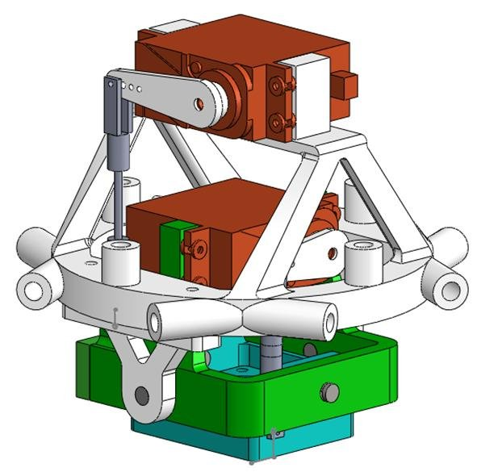
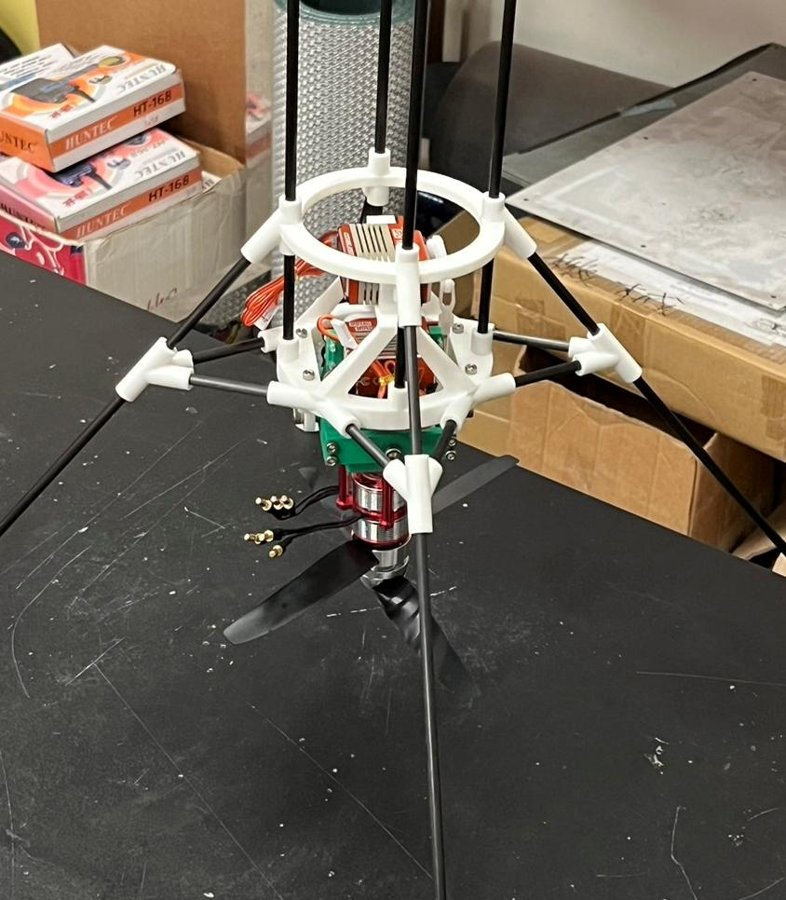
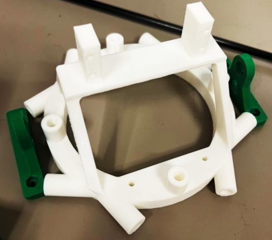
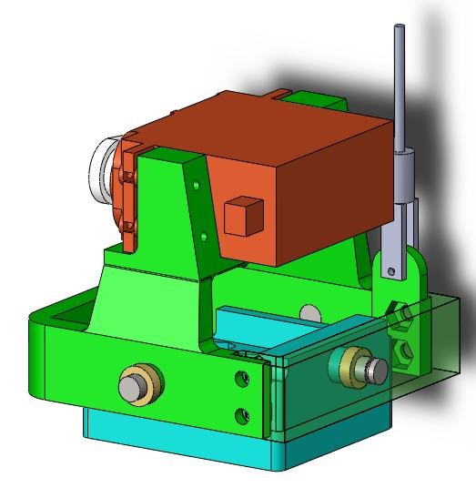
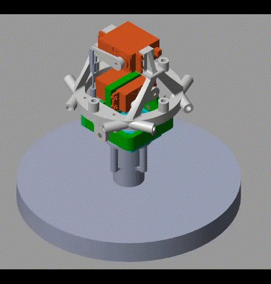
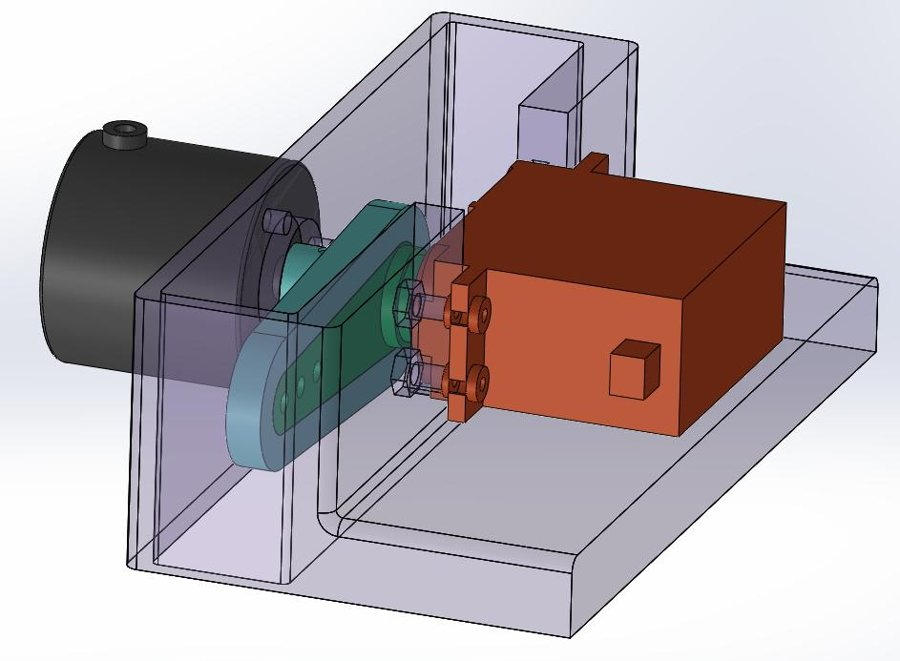

ARRC was developing HTTP-4, a vertical-landing rocket. A rocket flies only once, so its attitude control, GPS and other methods cannot be tested again and again. We proposed MINI4, a smaller, propeller-driven rocket drone built to HTTP-4's architecture and performance requirements, so the team can try those methods repeatedly before using them on HTTP-4.
MINI4 has only one thruster, so it is underactuated and can be stabilized only by tilting that thrust. This puts the thrust vector control (TVC) gimbal inside the control loop. Backlash in the gimbal adds error to its response, and a moving mechanism can disturb the body it is meant to stabilize. We designed a new gimbal with those two problems in mind and helped start the MINI4 project.
We modeled it in SolidWorks and 3D-printed the frames, with metal shafts and bearings at each joint. During testing, the servo mount on the second frame cracked. We thickened and filleted the mount and moved its fastening points to the side, held by bolts and nuts instead of self-tapping screws.


The linkage geometry makes the relation between servo angle and gimbal angle nonlinear. We imported the assembly into Simscape Multibody, swept each frame over ±15° and recorded the servo angle needed. Quadratic fits matched the simulation with R² > 0.999. We then converted servo angle to PWM pulse width (1500 µs + 10 µs per degree), so the attitude controller can command the gimbal directly.

| Gimbal −15° | Gimbal +15° | |||
|---|---|---|---|---|
| Servo angle | PWM | Servo angle | PWM | |
| Servo 1 | −8.90° | 1411.0 µs | 11.00° | 1610.0 µs |
| Servo 2 | 8.21° | 1582.1 µs | −7.03° | 1429.7 µs |
We suspected that the PWM values might carry small errors on the real servos. To keep the controller stable, we designed a test rig that couples the servo horn to an encoder and measured the actual servo angles. The test confirmed the mapping was usable.
